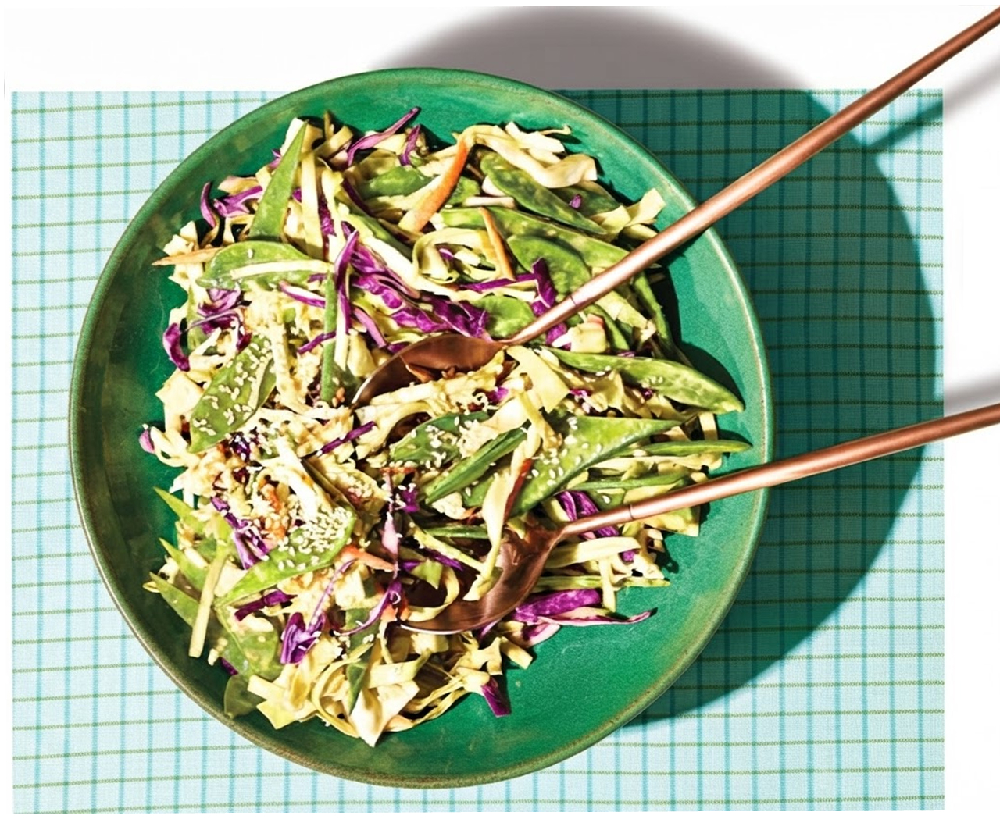

We all eat. But our meals don't all leave the same footprint.
Globally, the entire food system accounts for about one-third (34%) of all human-caused
greenhouse gas emissions. Let's see how our meal contributes to emission.
Search for what's on your plate. Each dish you add becomes a small climate decision — watch the plate on the right fill in.
ON YOUR PLATE
Suddenly, the plate that consisted of just food becomes something else: a collection of climate decisions. And the obvious answer appears —
Before we answer that, look beyond your plate —
Same recommendations does not make sense everywhere, the “problem food” changes depending on diet.
The share of emissions from animal foods versus plant foods swings wildly by country and by diet. "Eat less meat" means something very different in Canberra than it does in Jakarta.
Climate impact isn't determined by one ingredient alone. It depends on what we eat, how much we eat, and where we eat. That changes the question — instead of "what food is bad for the planet," ask: what could a lower-impact diet look like?
Not the diet everyone should eat — one possible scenario. Less red meat, less sugar, less refined food. More legumes, nuts, vegetables and fruit. Modelled across the whole world, here's what that shift is worth:
The biggest shift of all: from animal-based protein toward plant-based protein.
"Everyone should eat this way." But the research doesn't say that. A global diet can't simply be copied onto every plate — different countries start from different diets, different cultures eat differently, and the same food carries a different footprint in different places.
A global target needs local solutions. And now the story turns back toward you.
This is the plate you built above. Click the ingredient — then choose what replaces it.
Zoom out. The food system is made of billions of meals — not billions of individual people being told what to eat, but billions of individual food choices adding up into a shift in demand. Under the Planetary Health Diet scenario:
Not every meal needs to look the same. Not every country needs the same diet. And there isn't one ingredient everyone needs to eliminate. Instead: find the change that matters most in your own meal.